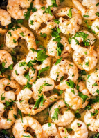
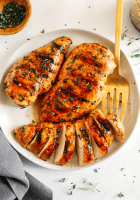
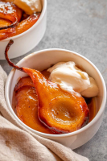

Seasonal recipes
Here's some ideas for using up seasonal ingredients
Garlic Butter Shrimp

- Shrimp (frozen is fine)
- Garlic (minced)
- Butter
- Salt
- Parsely (optional garnish)
Instructions
- Heat olive oil in a skillet over medium heat.
- Add minced garlic and cook until fragrant, about 1 minute.
- Add shrimp to the skillet and cook until pink and cooked through, about 2-3 minutes per side.
- Add butter to the skillet and stir until melted and combined with the garlic.
- Season with salt and garnish with chopped parsley before serving.
Balsamic Glazed Chicken

- Chicken breasts (boneless and skinless)
- Balsamic vinegar
- Honey
- Olive oil
- Salt and pepper
Instructions
- Preheat the oven to 400°F (200°C).
- Season chicken breasts with salt and pepper.
- In a small bowl, mix balsamic vinegar and honey.
- Heat olive oil in an oven-safe skillet over medium-high heat.
- Sear the chicken breasts on both sides until golden brown.
- Pour the balsamic-honey mixture over the chicken.
- Transfer the skillet to the preheated oven and bake for about 15-20 minutes, or until the chicken is cooked through and the glaze is caramelized.
Honey Baked Pears

- Pears (firm but ripe)
- Honey
- Butter
- Cinnamon
- Vanilla ice cream (optional, for serving)
Instructions
- Preheat the oven to 375°F (190°C).
- Cut the pears in half lengthwise and remove the core with a spoon.
- Arrange the pear halves, cut side up, in a baking dish.
- Drizzle honey over the pears and dot with small pieces of butter.
- Sprinkle cinnamon over the pears.
- Bake in the preheated oven for about 25-30 minutes, or until the pears are tender and caramelized.
- Serve warm, optionally with a scoop of vanilla ice cream on top.